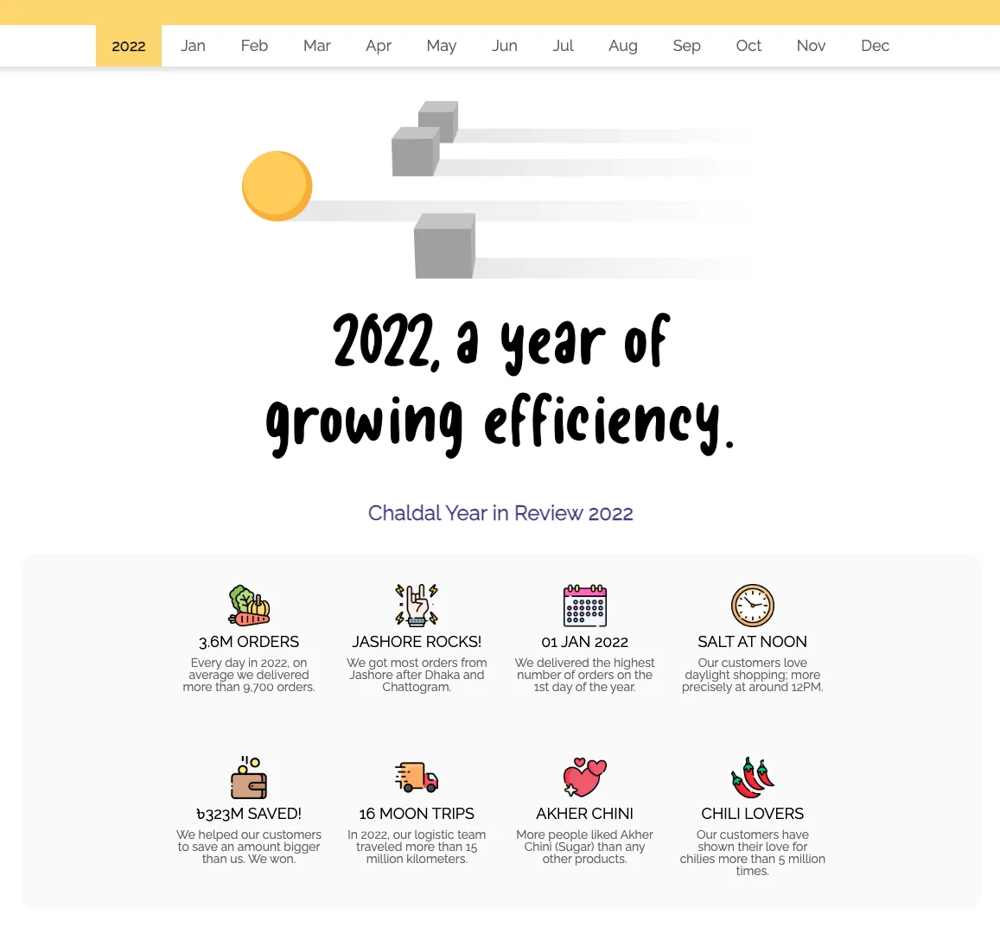
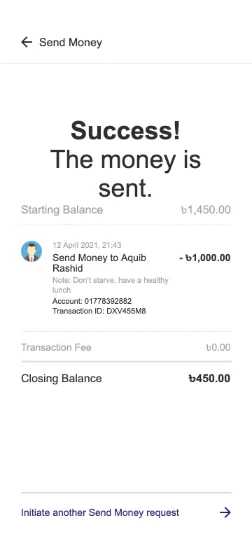
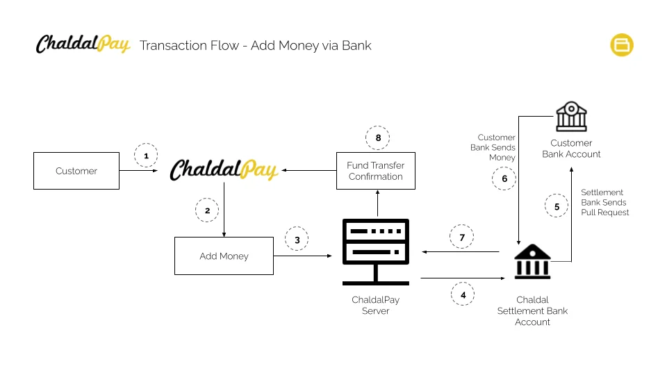
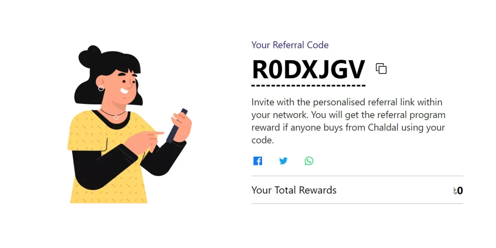
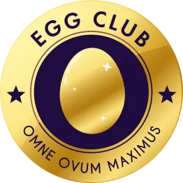

Chaldal is Bangladesh's largest grocery delivery platform, built on a dense network of micro-warehouses that let it deliver daily groceries and household essentials to customers' doors within the hour. Founded in 2013, it grew rapidly year over year, becoming a household name across Dhaka and beyond, a business that scaled not just an app, but real-world logistics, warehousing, and delivery infrastructure to match.
The name itself carries the idea at the core of the business: chal (rice) and dal (lentils) are the two staples that make up a daily meal for almost every household in Bangladesh. Chaldal added an egg at the front of its name and logo to complete that picture, a whole, everyday meal in one word. Eggs went on to become one of Chaldal's flagship products, and that same symbol would resurface years later in a very different form: Egg Club.
Before I officially joined Chaldal as Head of Product, I proposed something that didn't exist yet at the company: a public record of its own story. Chaldal had just come through a defining year, 2020 pushed the company to grow faster than ever, serving customers relentlessly through the pandemic. Nobody outside the company had really seen that story told in one place.

Some people commented that they could view a 100-year-long journey of Chaldal.
I planned and wrote the content, organized the resources, designed the website, and managed development end to end. It launched in mid-February 2021, first shared internally with the 2,000+ person team, then investors and partners, and finally the public. It was the first time much of Chaldal's internal journey had been made visible externally, some described it as seeing "a 100-year-long journey" compressed into one story. Its real impact wasn't a growth metric, it was cultural: genuine conversation across the wider tech community, among founders and developers, about Chaldal's scale and journey.
That project outlived the moment. Chaldal has continued the Year in Review concept every year since, it's now an official annual record for the company, and something people internally take pride in being featured in.
It was also, in hindsight, the clearest signal of how I'd approach the Head of Product role that followed: proposing what wasn't asked for, and owning it fully.
Bangladesh's digital payment landscape at the time was dominated by mobile financial services like bKash and Nagad, built for peer-to-peer transfers and cash-in, cash-out agents, not for embedded commerce.

A sample screen of Chaldal Pay application presented with the proposal
E-commerce platforms mostly relied on cash on delivery, and the idea of a wallet living natively inside a grocery app, tied to real inventory and delivery infrastructure, had no real precedent locally. Bangladesh Bank's regulatory framework hadn't been written with that model in mind either.
The first major initiative once I formally took the role was Chaldal Pay, an integrated wallet built into the core grocery platform. This was never just a design problem. It touched regulatory strategy, technical infrastructure, business modeling, and user experience simultaneously.
I owned the full documentation process to apply for a Payment System Provider (PSP) license from Bangladesh Bank, the sole authority governing financial transactions in the country.
Working with the technical team, I helped define the product end to end, from infrastructure diagrams to product flow, and designed the initial application prototype myself.
I also built the business case: the presentation covering product, features, business model, and team structure that went in front of regulators and internal stakeholders.
Chaldal received the NOC in February 2022, clearing the path to sandbox development and bank trials, a phase where I also led several of the bank partnerships.

Chaldal Pay's internal transaction flow defined in the presentation - instead of complex technical detailing, I made it simple and understandable for the regulatory authority.
With Chaldal Pay's regulatory groundwork underway, the next challenge was more product-native: growth. I took on the Chaldal Referral Program as both product designer and product owner, starting with the underlying economics, how much Chaldal actually spent to acquire a customer, and precise definitions of retention and churn.
That grounding shaped the design: an incentive model rewarding existing customers for bringing in new customers, with the reward tied to the new customer completing several repeat orders, not just signing up. Visually, it was a single-page feature. The logic behind it was considerably more complex.

The referral program's single-page interface
Once live, it surfaced a lesson no amount of upfront design could have anticipated, internal employees began finding loopholes to exploit the incentive for personal gain. It was a real education in designing for adversarial use, not just intended use. Despite that, the program worked, it became one of the most effective channels for acquiring new customers on the platform.
The referral program taught a hard truth about incentive systems: easy to switch on, nearly impossible to switch off without breaking trust. A loyalty program carries a different risk, where referral spend burns from a marketing budget, loyalty bonuses become an ongoing liability on the books, with real unpredictability for the future.

The Egg Club emblem our design team created as a symbol of prestige.
Rather than build another straightforward loyalty feature, I proposed something bigger: not a feature, but a new entity with its own identity and story. I initiated the naming and branding process that became Egg Club, turning what could have been a generic points system into something with real personality customers could form an attachment to.
The interface stayed simple: two key screens, a handful of new components. Underneath, the logic required multi-layer technical integration across the platform. Egg Club went on to become a significant marketing pillar and a core part of Chaldal's retention engine.
Toward the end of my time as Head of Product, I also contributed to a redesign of Chaldal's core grocery app, the platform's most central, highest-stakes surface. The version that shipped wasn't the direction I originally proposed, but I stayed closely involved, guiding the team and shaping the design through input rather than final say.